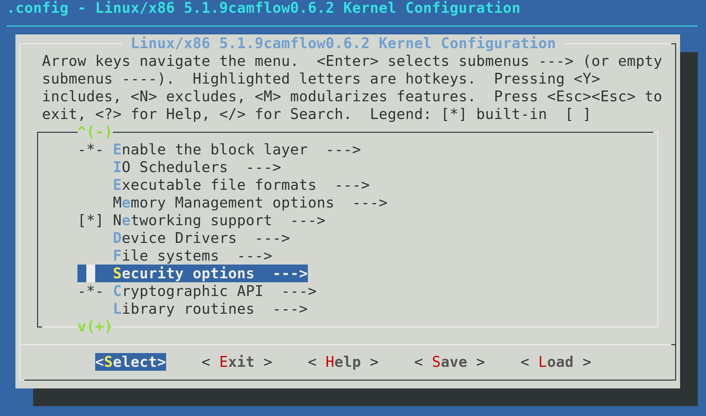
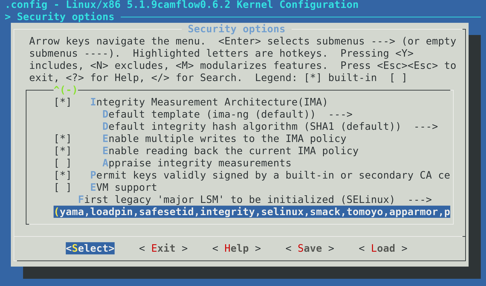
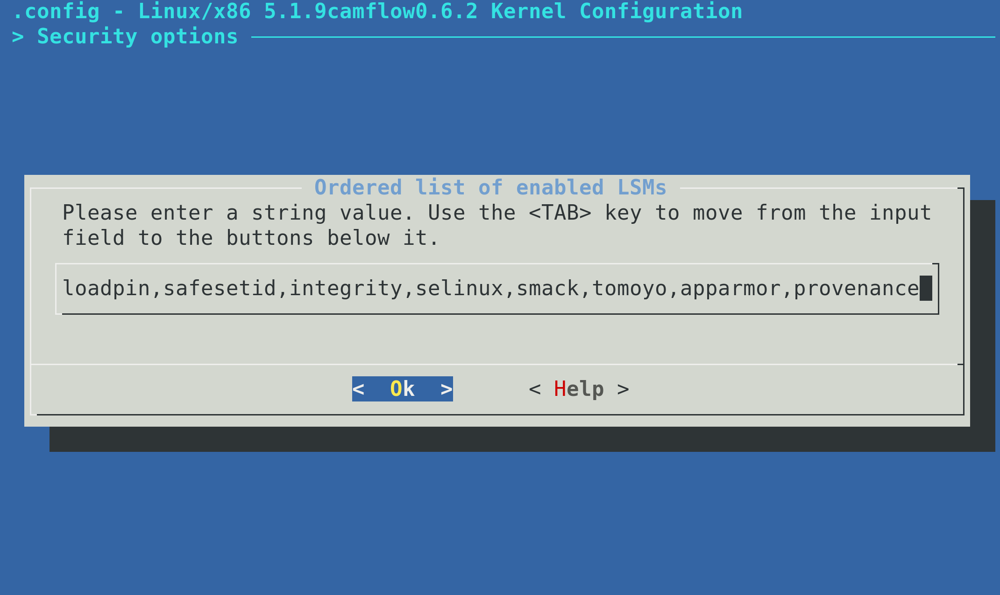
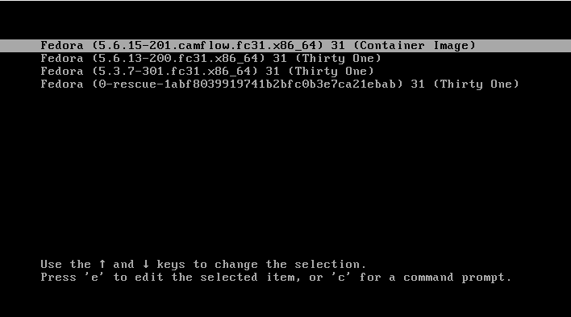

CamFlow project
CamFlow stands for Cambridge information Flow architecture, the Cam is also the river that flows through Cambridge, UK. CamFlow is a Linux Security Module (LSM) designed to capture data provenance for the purpose of system audit. The whole-system provenance capture mechanism is highly configurable, and can fit the needs of many different type of applications. CamFlow can stack with existing security modules such as SELinux.
To get in touch about the project, please contact Thomas Pasquier.
Support
CamFlow development started in 2014 at the University of Cambridge’s Opera Research Group (grant EPSRC EP/K011510/1). Further development has been supported by Harvard University’s Center for Research on Computation and Society as part of the Provenance@Harvard project (NSF grant SSI-1450277) and the University of Cambridge’s Digital Technology Group. Development is currently being supported by the University of Bristol and the University of British Columbia.
Contributing
The easiest way to contribute to CamFlow is by submitting issues to suggest improvements or report bugs. When reporting a bug, please specify the version of CamFlow you are running and your Linux distribution. To contribute a new feature, please fork the repository of the component you wish to improve, and submit a pull request against the dev branch. The pull request must pass the continuous integration test before it can be merged.
Installation
There are three main options covered below for how to install CamFlow:
- using the package manager on Fedora this is the recommended route;
- building the kernel on the local machine; or
- using vagrant to set up a virtual machine. The installation process can take a significant amount of time depending on your machine/network configuration. If you plan to use VM we suggest to use a recent machine with at least 16GB of RAM and 20GB of disk space.
CamFlow is an academic project. While CamFlow is actively maintained, an operating system is a complex environment with a multitude of moving parts and our resources are limited. CamFlow is mostly tested in virtualized environment and we do not have the resources for extensive test. Please, get in touch with Thomas Pasquier if you encounter any issue.
Package manager
The quickest way to install CamFlow is through the packages hosted on cloudsmith. For now, only Fedora is supported (please, click on this link and check which release(s) is/are currently supported).
Fedora
curl -1sLf 'https://dl.cloudsmith.io/public/camflow/camflow/cfg/setup/bash.rpm.sh' | sudo -E bash
sudo dnf -y install camflow
After installing packages
Next we need to activate the two CamFlow services:
sudo systemctl enable camconfd.service
sudo systemctl enable camflowd.service
After reboot we should be ready to use CamFlow.
sudo reboot now
Packages are tested in virtual environment with a limited set of configurations. In most cases things work fine. However, if you encounter any issue, please do look at how to build the project from source.
From source
Dependencies
First we need to install the dependencies required to build our kernel.
Depending on how recent your OS version is, you should install libelf-dev, libelf-devel, or elfutils-libelf-devel.
See this issue for details.
Fedora
sudo dnf groupinstall 'Development Tools'
sudo dnf install ncurses-devel cmake clang gcc-c++ wget git openssl-devel zlib
sudo dnf install patch mosquitto bison flex ruby dwarves elfutils-libelf-devel
sudo dnf install uthash-devel inih-devel paho-c-devel
Building and Installing the kernel
We first need to clone the camflow-install repository:
git clone https://github.com/CamFlow/camflow-install
We then get the installation started:
cd camflow-install
make all
This will build and install the CamFlow Linux Security Module as well as the userspace tools. The whole installation procedure may take a significant amount of time. The installation process may ask for the root password, so may not complete in an unattended manner.
Early in the build process you will be presented with a GUI to customise the kernel configuration. If you are not sure what to do, do not modify the configuration. Through this GUI, in addition to enabling provenance capture, you can: 1) set persistence of provenance state on/off (off by default) and 2) whole-system capture from boot on/off (off by default). The kernel configuration derives from the configuration currently presents on the system where you run the build, consequently in most cases you should not need to modify anything not relating to provenance capture.
Configuration options need to be carefully considered in resource-constrained environment.
Kernel version 5.1.x saw the modification of Linux Security Module stacking. It is important to ensure that CamFlow is properly loaded and is processed last.
During the configuration stage, select the Security options:

Then select the list at the bottom of the menu:

provenance must be listed and should appear last (i.e. you should add it to the list):

If provenance is not listed, CamFlow module will simply not be loaded.
For the installation process to take effect you need to reboot the machine.
sudo reboot now
Vagrant
Using a vagrant virtual machine is much simpler. First you need to install vagrant and virtualbox.
On Ubuntu, for example, that can be done as follows:
sudo apt-get install virtualbox
sudo apt-get install vagrant
Some Linux distributions ship very outdated version of VirtualBox or Vagrant. Outdated versions, and host/guest version mismatch are known to cause all sorts of troubles during provisioning.
Please check Vagrant and VirtualBox for details on how to install the latest version.
Once vagrant and virtualbox are installed, you need to obtain CamFlow vagrant provision script:
git clone https://github.com/CamFlow/vagrant.git
cd ./vagrant
There are different provisioning scripts available within the CamFlow/vagrant.git repository: please see in the camflow/vagrant for details on what they do. We will use the rpm provisioning script as an example:
cd ./rpm
vagrant plugin install vagrant-vbguest
vagrant up
# we reboot after the provisioning
vagrant reload
You can customize the Vagrantfile to personalize your experience.
Running virtual machines is resource consuming. Please, make sure the host has sufficient resource to do so (disk space, RAM, CPU etc.).
Reboot and GRUB
When booting a VM after successful provisioning, ensure that the CamFlow kernel is chosen in the GRUB menu, as illustrated bellow:

Quick start
Provenance graph
CamFlow represents the execution of a system as a directed acyclic graph. Vertices in the graph represent states of kernel objects (e.g. threads, files, sockets etc…) and relations represent flow of information between those states.
In the above example process 1 clone process 2.
process 2 write to a pipe.
process 1 read from the same pipe.
Version are created to guarantees acyclicity and to represent proper odering of information (see our CCS'18 paper for details).
Further description of the provenance are discussed in the output section.
Architecture overview
CamFlow capture mechanism: CamFlow is an implementation of the whole-system provenance concept. The idea is to perform provenance capture from the OS perspective, while providing guarantees about its completeness. This is achieved by relying on the OS reference monitor that capture interactions between user level applications and kernel objects. CamFlow is implemented in the Linux kernel and relies on the Linux Security Module framework and the NetFilter framework to effect the capture. source code
camflowd: camflowd is a daemon charged of recording the provenance captured in the kernel by CamFlow.
The provenance records are published by CamFlow to relayfs pseudo files.
The daemons retrieve those records, serialise them to a configuration-specified format and write them to a configuration-specified output.
source code
Configuration details are discussed in the recording configuration section.
camconfd: camconfd is a daemon charged with configuring the in-kernel capture mechanism.
The configuration daemon reads from /etc/camflow.ini and load the specified configuration into the kernel via a securityfs interface.
source code
Configuration details are discussed in the capture configuration section.
camflow-cli: CamFlow CLI (camflow) allows to dynamically modify the capture configuration through the command line. Further details are given in our walk through tutorial.
source code
libprovenance: is a C library implementing userspace utility functions to interact with CamFlow relayfs and securityfs interfaces. source code
Walk-through
In this walk-through we explore how to capture and look at the provenance generated by wget. The tutorial assumes that CamFlow has been installed and is running on a Fedora machine, and that the reader has some familiarity with our paper describing linux provenance capture (ACM SoCC'17).
You can install nano to easily edit files from the command line:
$ sudo dnf install nano
First we should verify that our kernel indeed contains CamFlow:
$ uname -r
X.X.Xcamflow_Y.Y.Y
X.X.X corresponds to the kernel version, and Y.Y.Y to CamFlow version.
You can check system events relating to CamFlow as follows:
$ journalctl -b -0 | grep camflow
We next check the configuration options that are available to us:
$ camflow -h
-h
usage.
-v
version.
-s
print provenance capture state.
-c
print out current configuration (can copy content in /etc/camflow.ini).
-e <bool>
enable/disable provenance capture.
-a <bool>
activate/deactivate whole-system provenance capture.
--compress-node <bool>
activate/deactivate node compression.
--compress-edge <bool>
activate/deactivate edge compression.
--duplicate <bool>
activate/deactivate duplication.
--file <filename>
display provenance info of a file.
--track-file <filename> <false/true/propagate>
set tracking.
--label-file <filename> <string>
applies label to the file.
--opaque-file <filename> <bool>
mark/unmark the file as opaque.
--process <pid>
display provenance info of a process.
--track-process <pid> <false/true/propagate>
set tracking.
--label-process <pid> <string>
applies label to the process.
--opaque-process <pid> <bool>
mark/unmark the process as opaque.
--track-ipv4-ingress <ip/mask:port> <track/propagate/record/delete>
track/propagate on bind.
--track-ipv4-egress <ip/mask:port> <track/propagate/record/delete>
track/propagate on connect.
--track-secctx <security context> <track/propagate/opaque/delete>
track/propagate based on security context.
--track-cgroup <cgroup ino> <track/propagate/delete>
track/propagate based on cgroup.
--track-user <user name> <track/propagate/opaque/delete>
track/propagate based on user.
--track-group <group name> <track/propagate/opaque/delete>
track/propagate based on group.
--node-filter <type> <bool>
set node filter.
--edge-filter <type> <bool>
set edge filter.
--node-propagate-filter <type> <bool>
set propagate node filter.
--edge-propagate-filter <type> <bool>
set propagate edge filter.
--reset-filter
reset filters.
--channel <string>
create a new relay channel (in /sys/kernel/debug/<string>).
--change-epoch
change epoch.
We should check the current configuration state:
$ camflow -s
Machine id: 1491436164
Policy hash: A49BD19BB2C51FF5C19CF4C3878531C59DFCA6956334620E537B978498625
Provenance capture:
- capture enabled;
- all disabled;
- provenance was captured;
- node compression enabled;
- edge compression enabled;
- duplication disabled;
Node filter (4000c80):
inode_unknown
directory
char
envp
Derived filter (0):
Generated filter (0):
Used filter (0):
Informed filter (0):
Propagate node filter (0):
Propagate derived filter (0):
Propagate generated filter (0):
Propagate used filter (0):
Propagate informed filter (0):
IPv4 ingress filter (0).
IPv4 egress filter (0).
Security context filter (0).
Namespace filter (0).
User filter (0).
Group filter (0).
The policy hash is based on the CamFlow version and the currently loaded capture policy. It can be used to quickly verify that two machines are running the same capture policy. It can also be obtained with camflow -p.
Let’s try to capture the provenance generated by the well known tool wget. We want to track and propagate provenance from its executable. We can do so as follows:
$ sudo camflow --track-file /bin/wget true
If we run wget, we should be able to obtain some provenance data:
$ wget www.google.com
$ tail /tmp/audit.log
{"prefix":{"prov" : "http://www.w3.org/ns/prov", "cf":"http://www.camflow.org"}, "activity":{"cf:AQAAAAAAAEBW5AEAAAAAABwAAAAHfl4eEAAAAAAAAAA=":{"cf:id":"123990","prov:type":"task","cf:boot_id":28,"cf:machine_id":"cf:509509127","cf:version":16,"cf:date":"2017:09:25T21:11:46","cf:jiffies":"4296340808","cf:uid":1000,"cf:gid":1000,"cf:pid":2578,"cf:vpid":2578,"cf:utsns":4026531838,"cf:ipcns":4026531839,"cf:mntns":4026531840,"cf:pidns":4026531836,"cf:netns":4026531993,"cf:cgroupns":4026531835,"cf:secctx":"unconfined_u:unconfined_r:unconfined_t:s0-s0:c0.c1023","cf:utime":"2329176","cf:stime":"5129935","cf:vm":"1839908","cf:rss":"150492","cf:hw_vm":"1841252","cf:hw_rss":"222676","cf:rbytes":"6860800","cf:wbytes":"0","cf:cancel_wbytes":"0","prov:label":"[task] 16"}}, "entity":{"cf:AAAIAAAAACCrXAMAAAAAABwAAAAHfl4eAAAAAAAAAAA=":{"cf:id":"220331","prov:type":"file_name","cf:boot_id":28,"cf:machine_id":"cf:509509127","cf:version":0,"cf:date":"2017:09:25T21:11:46","cf:jiffies":"4296339739","cf:pathname":"/usr/share/atom/atom","prov:label":"[path] /usr/share/atom/atom"},"cf:AAAIAAAAACCkXAMAAAAAABwAAAAHfl4eAAAAAAAAAAA=":{"cf:id":"220324","prov:type":"file_name","cf:boot_id":28,"cf:machine_id":"cf:509509127","cf:version":0,"cf:date":"2017:09:25T21:11:46","cf:jiffies":"4296339724","cf:pathname":"/usr/share/publicsuffix/public_suffix_list.dafsa","prov:label":"[path] /usr/share/publicsuffix/public_suffix_list.dafsa"},"cf:AACAAAAAACCmXAMAAAAAABwAAAAHfl4eAAAAAAAAAAA=":{"cf:id":"220326","prov:type":"xattr","cf:boot_id":28,"cf:machine_id":"cf:509509127","cf:version":0,"cf:date":"2017:09:25T21:11:46","cf:jiffies":"4296339736","cf:name":"user.xdg.origin.url","cf:size":22,"cf:flags":"0x0","prov:label":"[xattr] user.xdg.origin.url"},"cf:AAAIAAAAACCnXAMAAAAAABwAAAAHfl4eAAAAAAAAAAA=":{"cf:id":"220327","prov:type":"file_name","cf:boot_id":28,"cf:machine_id":"cf:509509127","cf:version":0,"cf:date":"2017:09:25T21:11:46","cf:jiffies":"4296339736","cf:pathname":"/home/vagrant/workspace/camflow-dev/build/camflow-cli/index.html","prov:label":"[path] /home/vagrant/workspace/camflow-dev/build/camflow-cli/index.html"},"cf:ABAAAAAAACBq5AEAAAAAABwAAAAHfl4eCwAAAAAAAAA=":{"cf:id":"124010","prov:type":"fifo","cf:boot_id":28,"cf:machine_id":"cf:509509127","cf:version":11,"cf:date":"2017:09:25T21:11:46","cf:jiffies":"4296340808","cf:uid":1000,"cf:gid":1000,"cf:mode":"0x1180","cf:secctx":"unconfined_u:unconfined_r:unconfined_t:s0-s0:c0.c1023","cf:ino":39081,"cf:uuid":"e2392e0f-dab3-94bc-feb1-d1975fb2ea3e","prov:label":"[fifo] 11"}}, "used":{"cf:AAAAAgAAIID+AgAAAAAAABwAAAAHfl4eAAAAAAAAAAA=":{"cf:id":"766","prov:type":"read","cf:boot_id":28,"cf:machine_id":"cf:509509127","cf:date":"2017:09:25T21:11:46","cf:jiffies":"4296340808","prov:label":"read","cf:allowed":"true","prov:entity":"cf:ABAAAAAAACBq5AEAAAAAABwAAAAHfl4eCwAAAAAAAAA=","prov:activity":"cf:AQAAAAAAAEBW5AEAAAAAABwAAAAHfl4eEAAAAAAAAAA="}}, "wasGeneratedBy":{"cf:ACAAAAAAQID8AgAAAAAAABwAAAAHfl4eAAAAAAAAAAA=":{"cf:id":"764","prov:type":"write","cf:boot_id":28,"cf:machine_id":"cf:509509127","cf:date":"2017:09:25T21:11:46","cf:jiffies":"4296340808","prov:label":"write","cf:allowed":"true","prov:activity":"cf:AQAAAAAAAEBW5AEAAAAAABwAAAAHfl4eDwAAAAAAAAA=","prov:entity":"cf:ABAAAAAAACBq5AEAAAAAABwAAAAHfl4eCwAAAAAAAAA="}}, "wasInformedBy":{"cf:AAAAAACAEID9AgAAAAAAABwAAAAHfl4eAAAAAAAAAAA=":{"cf:id":"765","prov:type":"version_activity","cf:boot_id":28,"cf:machine_id":"cf:509509127","cf:date":"2017:09:25T21:11:46","cf:jiffies":"4296340808","prov:label":"version_activity","cf:allowed":"true","prov:informant":"cf:AQAAAAAAAEBW5AEAAAAAABwAAAAHfl4eDwAAAAAAAAA=","prov:informed":"cf:AQAAAAAAAEBW5AEAAAAAABwAAAAHfl4eEAAAAAAAAAA="}}, "wasDerivedFrom":{"cf:AgAAAAAAgID7AgAAAAAAABwAAAAHfl4eAAAAAAAAAAA=":{"cf:id":"763","prov:type":"version_entity","cf:boot_id":28,"cf:machine_id":"cf:509509127","cf:date":"2017:09:25T21:11:46","cf:jiffies":"4296340808","prov:label":"version_entity","cf:allowed":"true","prov:usedEntity":"cf:ABAAAAAAACBq5AEAAAAAABwAAAAHfl4eCgAAAAAAAAA=","prov:generatedEntity":"cf:ABAAAAAAACBq5AEAAAAAABwAAAAHfl4eCwAAAAAAAAA="}}}
We can see that some provenance JSON has indeed been generated. You can check here to see what this data means. Publishing the provenance is the job of camflowd, let’s look at its configuration to understand what it is doing:
$ cat /etc/camflowd.ini
[general]
; output=null
; output=mqtt
; output=unix_socket
; output=fifo
output=log
format=w3c
;format=spade_json
[log]
path=/tmp/audit.log
[mqtt]
address=m12.cloudmqtt.com:17065
username=camflow
password=test
; message delivered: 0 at most once, 1 at least once, 2 exactly once
qos=2
[unix]
address=/tmp/camflowd.sock
[fifo]
path=/tmp/camflowd-pipe
The system is clearly configured to publish the provenance to a log file, and this file has been specified to be /tmp/audit.log. If we were to publish our provenance to MQTT, we could visualise it in real time on our demo website. Note that changes to camflowd configuration require the system or the service to be restarted.
We have seen that we can edit the capture configuration via the command line. If we want something a bit more permanent and practical, we can edit /etc/camflow.ini. This file is read during the boot process by the camconfd service, and is used to set the capture policy. Let’s have a look at this configuration file:
$ cat /etc/camflow.ini
[provenance]
;unique identifier for the machine, use hostid if set to 0
machine_id=0
;enable provenance capture
enabled=true
;record provenance of all kernel object
all=false
node_filter=directory
node_filter=inode_unknown
node_filter=char
node_filter=envp
; propagate_node_filter=directory
; relation_filter=sh_read
; relation_filter=sh_write
; propagate_relation_filter=write
[compression]
; enable node compression
node=true
edge=true
duplicate=false
[file]
;set opaque file
opaque=/usr/bin/bash
;set tracked file
;track=/home/thomas/test.o
;propagate=/home/thomas/test.o
[ipv4−egress]
;propagate=0.0.0.0/0:80
;propagate=0.0.0.0/0:404
;record exchanged with local server
;record=127.0.0.1/32:80
[ipv4−ingress]
;propagate=0.0.0.0/0:80
;propagate=0.0.0.0/0:404
;record exchanged with local server
;record=127.0.0.1/32:80
[user]
;track=vagrant
;propagate=vagrant
;opaque=vagrant
[group]
;track=vagrant
;propagate=vagrant
;opaque=vagrant
[secctx]
;track=system_u:object_r:bin_t:s0
;propagate=system_u:object_r:bin_t:s0
;opaque=system_u:object_r:bin_t:s0
Configuration
Capture configuration
Sample configuration
One of the strengths of CamFlow is the ability to fine-tune the provenance information it captures.
Edit /etc/camflow.ini to modify the capture configuration.
To apply a new configuration, reboot the machine.
Alternatively when developing policy you can experiment using camflow CLI (see camflow -h).
Policies defined through the CLI are not persisted in current release.
Follows a sample /etc/camflow.ini configuration:
[provenance]
;unique identifier for the machine, use hostid if set to 0
machine_id=0
;enable provenance capture
enabled=true
;record provenance of all kernel object
all=false
node_filter=directory
node_filter=inode_unknown
node_filter=char
node_filter=envp
; propagate_node_filter=directory
; relation_filter=sh_read
; relation_filter=sh_write
; propagate_relation_filter=write
[compression]
; enable node compression
node=true
edge=true
duplicate=false
[file]
;set opaque file
opaque=/usr/bin/bash
;set tracked file
;track=/home/thomas/test.o
;propagate=/home/thomas/test.o
[ipv4−egress]
;propagate=0.0.0.0/0:80
;propagate=0.0.0.0/0:404
;record exchanged with local server
;record=127.0.0.1/32:80
[ipv4−ingress]
;propagate=0.0.0.0/0:80
;propagate=0.0.0.0/0:404
;record exchanged with local server
;record=127.0.0.1/32:80
[user]
;opaque=vagrant
;track=vagrant
;propagate=vagrant
[group]
;opaque=vagrant
;track=vagrant
;propagate=vagrant
[secctx]
;track=system_u:object_r:bin_t:s0
;propagate=system_u:object_r:bin_t:s0
;opaque=system_u:object_r:bin_t:s0
Configuration parameters
Following is a list of the parameters and their effects, broken down by section. A “boolean” parameter accepts values “true” or “false”.
provenance
| parameter | description |
|---|---|
machine_id |
unique identifier for the machine in provenance records, use hostid if set to 0 |
enabled |
boolean; enable provenance capture? if false, the rest of the parameters do not matter |
all |
boolean; capture provenance of all kernel objects? |
node_filter |
do not capture this kind of node (i.e. vertex) |
relation_filter |
do not capture this kind of relation (i.e. edge) |
propagate_node_filter |
do not propagate tracking through this kind of node (i.e. vertex) |
propagate_relation_filter |
do not propagate tracking through this kind of relation (i.e. edge) |
all
| value | effect |
|---|---|
true |
capture provenance for all objects |
false |
capture no provenance except for indicated objects (specified via file, ipv4-ingress, etc.) |
In either case the provenance record is affected by:
- graph filters (
node_filter,propagate_node_filter, etc.) - any object marked
opaque
node_filter
You can specify the node_filter parameter multiple times, with a different node type each time. See here for the list of supported node types.
relation_filter
You can specify the relation_filter parameter multiple times, with a different relation type each time. See here for the list of supported relation types.
propagate_node_filter
As with node_filter, you can specify this parameter multiple times for various node types.
propagate_relation_filter
As with relation_filter, you can specify this parameter multiple times for various relation types.
No provenance records are emitted for nodes (relations) indicated by X_filter=Y.
For nodes (relations) indicated by propagate_X_filter=Y, records will be emitted but tracking will not be propagated through them.
compression
“Compressing” provenance means emitting as few provenance records as possible to capture an interaction. For example, if a process reads a file three times, then a compressed provenance record would contain only one read relation while a complete provenance record would contain three relations.
This is desirable if the goal of provenance collection is to build a provenance graph. However, if you are trying to perform a security audit, then the fact and timing of multiple accesses may be of interest. In this example compression may be undesirable.
| parameter | description |
|---|---|
node |
boolean; if true only create a new version of an object to avoid a cycle, if false create a new version on any object state change (i.e. when receiving information from other objects) |
edge |
boolean; if true do not repeat multiple consecutive edges of the same type |
duplicate |
boolean; if true publish the vertex pair associated with a relation when publishing that relation, if false omit any previously-published vertices |
file
This describes provenance capture behavior for files.
| parameter | description |
|---|---|
opaque |
provenance is not captured for any interactions with this file |
track |
directly track any information flow to/from this file and any process resulting from its execution |
propagate |
transitively track any information flow to/from this file |
track
Use track if you want the provenance information to include every time this file is read or written.
propagate
Use propagate if you want the provenance information to track the flow of data out of this file, through other processes, into other files, etc.
ipv4-egress
Track information leaving the system being monitored (connect).
| parameter | description |
|---|---|
propagate |
similar to file, but for data sent to this IPv4 address |
record |
like propagate, but also capture packet content |
Specify an IPv4 address using the format <ip>/<mask>:<port>.
ipv4-ingress
Track information entering the system being monitored (bind).
| parameter | description |
|---|---|
propagate |
see ipv4-egress |
record |
see ipv4-egress |
user
Like file, but for users.
| parameter | description |
|---|---|
opaque |
similar to file, but for this username |
track |
" |
propagate |
" |
group
Like file, but for groups.
secctx
Same as file, but for security contexts.
Specify a security context using the format of the main Linux Security Module of the system (see here for SELinux).
Further information about these parameters may be gleaned by perusing the header files in the kernel module.
Recording configuration
After CamFlow captures provenance, you can configure where and in what format the provenance information is published.
The configuration file is /etc/camflowd.ini.
To apply a new configuration, run systemctl restart camflowd.service.
Sample configuration
Here is a sample /etc/camflowd.ini configuration.
[general]
;output=null
;output=mqtt
;output=unix_socket
;output=fifo
output=log
format=w3c
;format=spade_json
[log]
path=/tmp/audit.log
[mqtt]
address=m12.cloudmqtt.com:17065
username=camflow
password=test
; message delivered: 0 at most once, 1 at least once, 2 exactly once
qos=2
; topic, provided prefix + machine_id (e.g. camflow/provenance/1234)
topic=camflow/provenance/
[unix]
address=/tmp/camflowd.sock
[fifo]
path=/tmp/camflowd-pipe
Configuration parameters
Following is a list of the parameters and their effects, broken down by section.
general
| parameter | description |
|---|---|
output |
where to publish provenance records? |
format |
in what format to publish provenance records? |
output
| value | effect |
|---|---|
null |
discard provenance records |
mqtt |
publish to an MQTT service |
unix_socket |
publish to a UNIX socket |
fifo |
publish to a named pipe (“FIFO”) |
log |
publish to a log file |
format
| value | effect |
|---|---|
w3c |
use w3c PROV-JSON format |
spade_json |
use SPADE JSON format |
log
If output=log, these parameters take effect.
| parameter | description |
|---|---|
path |
publish to this file |
mqtt
If output=mqtt, these parameters take effect.
| parameter | description |
|---|---|
address |
MQTT broker |
username |
credentials |
password |
credentials |
qos |
delivery guarantees |
qos
For each record, publish to broker…
| value | effect |
|---|---|
| 0 | at most once |
| 1 | at least once |
| 2 | exactly once |
unix_socket
If output=unix_socket, these parameters take effect.
| parameter | description |
|---|---|
address |
publish to the socket at this path |
fifo
If output=fifo, these parameters take effect.
| parameter | description |
|---|---|
path |
publish to the fifo at this path |
Output format
The output generated by camflowd supports two formats: W3C PROV-JSON format and the SPADE JSON format.
The W3C PROV output is not a single JSON object, but rather a collection of objects each representing an arbitrary sub-part of the graph.
SPADE JSON is CamFlow default output. One can change this setting by modifying camflowd configuration.
Examples
Example of an inode vertex in W3C PROV format:
"ABAAAAAAACAe9wIAAAAAAE7aeaI+200UAAAAAAAAAAA=": {
"cf:id": "194334",
"prov:type": "fifo",
"cf:boot_id": 2725894734,
"cf:machine_id": 340646718,
"cf:version": 0,
"cf:date": "2017:01:03T16:43:30",
"cf:jiffies": "4297436711",
"cf:uid": 1000,
"cf:gid": 1000,
"cf:mode": "0x1180",
"cf:secctx": "unconfined_u:unconfined_r:unconfined_t:s0-s0:c0.c1023",
"cf:ino": 51964,
"cf:uuid": "32b7218a-01a0-c7c9-17b1-666f200b8912",
"prov:label": "[fifo] 0"
}
Example of an inode vertex in SPADE JSON format:
{
"type":"Entity",
"id":"ACAAAAAAACDZtAAAAAAAAAEAAACVwxEABgAAAAAAAAA=",
"annotations":
{
"object_id":"46297",
"object_type":"socket",
"boot_id":1,
"cf:machine_id":"cf:1164181",
"version":6,"cf:date":"2020:07:11T10:41:28",
"epoch":2,
"uid":0,
"gid":0,
"mode":"0xc1ff",
"secctx":"system_u:object_r:unlabeled_t:s0",
"ino":18274,
"uuid":"00000000-0000-0000-0000-000000000000"
}
}
Example of a write edge in W3C PROV format:
"QAAAAAAAQIANAAAAAAAAAE7aeaI+200UAAAAAAAAAAA=": {
"cf:id": "13",
"prov:type": "write",
"cf:boot_id": 2725894734,
"cf:machine_id": 340646718,
"cf:date": "2017:01:03T16:43:30",
"cf:jiffies": "4297436711",
"prov:label": "write",
"cf:allowed": "true",
"prov:activity": "AQAAAAAAAEAf9wIAAAAAAE7aeaI+200UAQAAAAAAAAA=",
"prov:entity": "ABAAAAAAACAe9wIAAAAAAE7aeaI+200UAQAAAAAAAAA=",
"cf:offset": "0"
}
Example of a write edge in SPADE JSON format:
{
"type":"WasGeneratedBy",
"from":"ABAAAAAAACCi2wAAAAAAAAEAAACVwxEAAQAAAAAAAAA=",
"to":"AQAAAAAAAECk2wAAAAAAAAEAAACVwxEACQAAAAAAAAA=",
"annotations":
{
"id":"IAAAAAAAQID0CwAAAAAAAAEAAACVwxEAAAAAAAAAAAA=",
"relation_id":"3060",
"relation_type":"write",
"boot_id":1,
"cf:machine_id":"cf:1164181",
"cf:date":"2020:07:11T10:41:28",
"epoch":2,
"jiffies":"4294759940",
"allowed":"true",
"flags":"2",
"task_id":"56228",
"from_type":"pipe",
"to_type":"task"
}
}
Vertex and edge attributes within the prov: namespace are described in the W3C PROV-JSON documentation.
The permissible values for the prov:type are described for relations and for vertices.
We describe in the next section the attributes within the cf: (CamFlow) namespace.
Attributes
cf:machine_id machine unique identifier. (uint32)
cf:boot_id boot identifier, unique per machine. (uint32)
cf:id vertex/edge identifier, unique per boot+machine. (uint64)
cf:date date captured when vertex/edge is recorded in userspace. (string)
cf:jiffies jiffies captured when vertex/edge is recorded in kernel (uint64)
Edge attributes
cf:offset offset on file object (int64)
Vertex attributes
cf:version object version (version correspond to a state of an object). (uint32)
cf:uid user ID. (uint32)
cf:gid group ID. (uint32)
cf:pid process identifier. (uint32)
cf:vpid virtual process identifier. (uint32)
cf:XXXns ino corresponding to a given namespace. (uint32)
cf:secctx security context as defined by the major linux security module (e.g. SELinux, AppArmor depending on your distribution). (string)
cf:mode inode mode. (uint32)
cf:ino inode number. (uint32)
cf:uuid superblock uuid. (uuid)
cf:length size of path/value/name/content attribute when present. (uint32)
cf:valid iattribute valid value. (uint32)
cf:atime access time. (int64)
cf:ctime change time. (int64)
cf:mtime modification time. (int64)
cf:truncated if the value/name/content have been truncated. (boolean)
cf:content IP packet content value. (binary)
cf:seq IP sequence number. (uint32)
cf:sender packet sender IP address. (string)
cf:receiver packet receiver IP address. (string)
cf:address IP address. (JSON struct)
cf:pathname pathname. (string)
cf:value environment/argument variable value. (string)
Formal modelling
We are exploring means to formally model the provenance generated by CamFlow capture system. This is achieved by performing static analysis of the kernel source code. We have made available the models corresponding to LSM hooks and system calls. The models are also available in raw dot format. An early description of the process is described in our CCS'18 paper.
CamQuery
The concept behind CamQuery is described in our CCS'18 paper.
This section is under construction as we work further on this aspect of the project. If you encounter any difficulty, please contact Thomas Pasquier!
We assume a machine with CamFlow newly installed and running. To build and load the demo query, do as follow:
git clone https://github.com/camflow/libcamquery
cd libcamquery
make build
make load
You may need to install dependencies such as elfutils-libelf-devel.
To test that the query has been properly loaded:
dmesg
You should see the following entries:
Provenance: loading new query... (My Example Query)
Hello World!
Provenance: registering policy hook...
By default CamFlow does not generate provenance. We are going to change its configuration (more info here).
sudo camflow -a true
sudo camflow -a false
Those commands turned on and off whole-system provenance capture. You now run:
dmesg
You should see a list of edges and vertices.
Publications
CamFlow is discussed in the following publications. Details given in these papers may be outdated – please refer to the code if in doubt or contact us.
Using CamFlow in your paper? Cite the following paper:
@inproceedings{pasquier-socc2017,
title = {Practical Whole-System Provenance Capture},
booktitle = {Symposium on Cloud Computing (SoCC{\textquoteright}17)},
year = {2017}
organization = {ACM},
author = {Pasquier, Thomas and Xueyuan Han and Goldstein, Mark and Moyer, Thomas and Eyers, David and Margo Seltzer and Bacon, Jean}
}
If you are using CamQuery, please do cite the following paper:
@inproceedings{pasquier2018ccs,
title={Runtime Analysis of Whole-System Provenance},
author={Pasquier, Thomas and Han, Xueyuan and Moyer, Thomas and Bates, Adam and Hermant, Olivier and Eyers, David and Bacon, Jean and Seltzer, Margo},
booktitle={Conference on Computer and Communications Security (CCS'18)},
year={2018},
organization={ACM}
}
Capture
[4] Pasquier T., Han X., Moyer T., Bates A., Eyers D., Hermant O., Bacon J. and Seltzer M. Runtime Analysis of Whole-System Provenance. Conference on Computer and Communications Security (CCS'18) (2018), ACM. pdf bib video
[3] Pasquier T., Han X., Goldstein M., Moyer T., Eyers D., Seltzer M. and Bacon J. Practical Whole-System Provenance Capture. Symposium on Cloud Computing (SoCC'17) (2017), ACM. pdf bib poster
[2] Pasquier T., Singh J., , Bacon J., and Eyers D. Information Flow Audit for PaaS Clouds. In International Conference on Cloud Engineering (IC2E'16) (2016), IEEE. pdf bib
[1] Pasquier T., Singh J., Eyers D., and Bacon J. CamFlow: Managed Data-Sharing for Cloud Services. IEEE Transactions on Cloud Computing (TCC) (2015), IEEE. pdf bib
Applications
[9] Han X., Pasquier T., Bates A., Mickens J. and Seltzer M. UNICORN: Runtime Provenance-Based Detector for Advanced Persistent Threats. Network and Distributed System Security Symposium (NDSS'20) (2020). pdf bib video
[8] Han X., Mickens J., Gehani A., Seltzer M. and Pasquier T. Xanthus: Push-button Orchestration of Host Provenance Data Collection. International Workshop on Practical Reproducible Evaluation of Systems (P-RECS'20) (2020). pdf bib
[7] G. Ayoade, A. Khandakar, S. Pracheta, G. Yang, A. Anmol, J. Kangkook, K. Latifur, and S. Anoop. Evolving Advanced Persistent Threat Detection using Provenance Graph and Metric Learning. Conference on Communications and Network Security (CNS'20) (2020). article bib
[7] Chan S. C., Cheney J., Bhatotia P., Gehani A., Irshad H., Pasquier T., Carata L. and Seltzer M. ProvMark: A Provenance Expressiveness Benchmarking System. International Middleware Conference (Middleware'19) (2019), ACM/IFIP. pdf bib
[6] Pasquier T., Eyers D. and Seltzer M. From Here to Provtopia. VLDB Workshop on Towards Polystores that manage multiple Databases, Privacy, Security and/or Policy Issues for Heterogenous Data (Poly'19) (2019), Springer. pdf bib
[5] Englbrecht L., Langner G., Pernul G. and Quirchmayr G. Enhancing credibility of digital evidence through provenance-based incident response handling. International Conference on Availability, Reliability and Security (ARES'19), ACM. pdf bib
[4] Han X., Pasquier T. and Seltzer M. Provenance-based Intrusion Detection: Opportunities and Challenges. Workshop on the Theory and Practice of Provenance (TaPP'18) (2018), USENIX. pdf bib website
[3] Wang F., Joung Y., and Mickens J. Cobweb: Practical Remote Attestation Using Contextual Graphs. Workshop on System Software for Trusted Execution (SysTEX'17) (2017), ACM. pdf bib
[2] Han X., Pasquier T., Ranjan T., Goldstein M., and Seltzer M. FRAPpuccino: Fault-detection through Runtime Analysis of Provenance. Workshop on Hot Topics in Cloud Computing (HotCloud'17) (2017), USENIX. pdf bib website poster
[1] Pasquier T. and Eyers D. Information Flow Audit for Transparency and Compliance in the Handling of Personal Data. IC2E International Workshop on Legal and Technical Issues in Cloud Computing (CLaw'16) (2016), IEEE. pdf bib